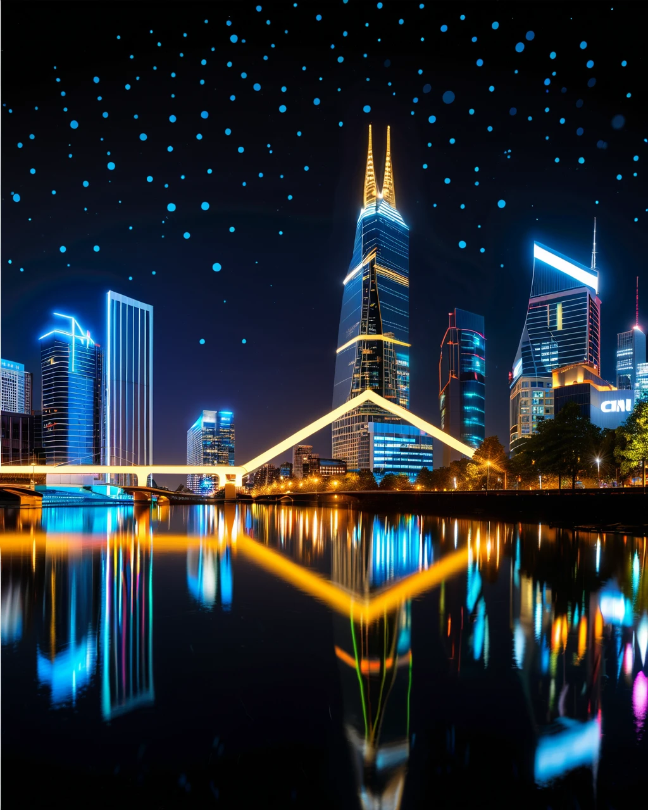

🌸 学園モノ（School Life）
Shoujo Manga
プロンプト
Japanese manga style, high school romance scene, beautiful detailed anime girl with flowing black hair and school uniform, cherry blossom petals falling, school courtyard background, shoujo manga aesthetic, soft pastel colors, sparkling eyes, screen tone effects, detailed manga panels composition, romantic atmosphere, spring season, after school sunset lighting, manga page layout, professional manga art, clean linework, detailed shading
💡 Expert Insight
青年期の「自己探求」をテーマに、夕暮れの図書室という内省的な空間を生成。プロンプトの「thoughtful expression」は、ソクラテスの「無知の知」への第一歩を表現しています。
🤖 SF（Science Fiction）
Seinen Manga
プロンプト
Japanese manga style, cyberpunk mecha pilot in futuristic cockpit, dynamic action pose, detailed mechanical designs, neon city skyline background, seinen manga aesthetic, high contrast lighting, speed lines and motion blur effects, holographic interface displays, metallic textures, dramatic perspective, intense expression, blue and purple color scheme, professional manga illustration, sharp detailed linework, cinematic composition
💡 Expert Insight
法の支配（Rule of Law）がデジタル空間に拡張された未来を視覚化。天秤を持つサイボーグは、AI時代の「正義の女神」を象徴しています。
⚔️ ファンタジー（Fantasy）
Shounen Manga
プロンプト
Japanese manga style, fantasy adventure scene, young hero with magical sword, mystical forest with ancient ruins, shounen manga aesthetic, epic composition, magical light effects, detailed fantasy clothing and armor, determined expression, action-ready pose, warm golden lighting, adventure atmosphere, manga speed lines, detailed background art, professional manga illustration, dramatic shadows and highlights, traditional Japanese manga techniques
💡 Expert Insight
ホッブズの「万人の万人に対する闘争」を脱した、自然状態と文明の境界線を表現。Hires.fixによる緻密な描写が、平和な社会の繊細さを際立たせます。
⚖️ 正義論（Theory of Justice）
Philosophyプロンプト
Japanese manga style, john rawls veil of ignorance concept, group of faceless people in silhouette standing before a glowing curtain of light, decision making scene, ethereal atmosphere, philosophical manga aesthetic, soft diffusion lighting, mystery and fairness, symbolism of justice, clean linework, monochromatic with hints of blue, detailed composition
💡 Expert Insight
「無知のベール」を仮想的な境界線として描写。自分が誰であるかを知らない状態での合意形成という、公正な社会の出発点を視覚化しました。
🏔️ 欲求階層（Hierarchy of Needs）
Psychologyプロンプト
Japanese manga style, maslow's hierarchy of needs symbolism, massive crystal pyramid floating in blue sky, different glowing layers, bright shining light at the very top, clouds surrounding the base, inspirational atmosphere, shonen manga aesthetic, vibrant colors, lens flare effects, dreamlike quality, detailed cloud rendering, majestic composition
💡 Expert Insight
自己実現へと向かう人間の階層的な欲求を、天空に浮かぶピラミッドで表現。頂点の輝きは、個人のポテンシャルが完全に開花した状態を象徴しています。
📈 景気循環（Business Cycle）
Economics

プロンプト
Japanese manga style, economic business cycle visualization, futuristic city skyline forming a sine wave graph, glowing neon lights, cinematic night view, rise and fall of buildings, stock market symbolism, seinen manga aesthetic, high contrast urban lighting, motion blur of traffic, digital interface elements overlay, professional illustration, dramatic angle
💡 Expert Insight
資本主義社会の宿命である景気変動を、光り輝く都市のグラフとして表現。上昇と下降のダイナミズムをシネマティックな意匠に込めています。